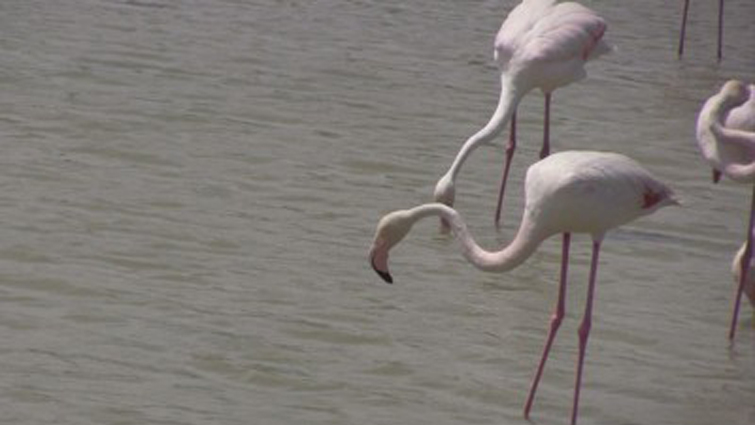

SCHIZOFRENIA KATATONICZNA z cyklu PSYCHOANIMALJA

SCHIZOFRENIA KATATONICZNA video z cyklu Psychoanimalja
Filmy zrealizowane odnosza sie do chorob i zaburzen psychicznych, ktore przypisywane sa zwierzetom po wnikliwej obserwacji ich zachowan.
kamera i montaz: Izabela Chamczyk
glos: Agnieszka Obszanska, Izabela Chamczyk, Michal Orzechowski
dzwiek: Agnieszka Obszanska, Izabela Chamczyk
diagnoza i tekst: Renata Iwaniec
Projekt zrealizowany dzieki Stypendium z Budzetu Ministra Kultury i Dziedzictwa Narodowego